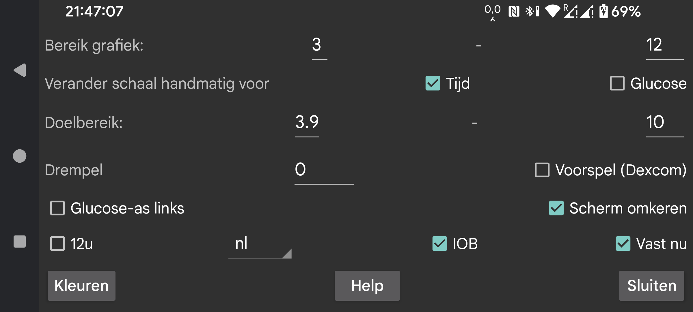

Verander de kleuren van de grafiek, scans en hoeveelheden.
In Librelink lopen de weergegeven glucose waarden van 0 tot 21 mmol/L (als geen waarde daarbovenuit gaat). In Juggluco kun je zelf de minimale en maximale waarde aangeven. Deze grenzen worden alleen gebruikt als alle op het scherm weergegeven glucose waarden binnen deze grenzen vallen. Bijvoorbeeld als het grafiek bereik 3-9 is en alle waarden op het scherm zich tussen 5 mmol/L en 6 mmol/L bevinden, loopt de glucose as van de grafiek van 3 mmol/L tot 9 mmol/L. Als een waarde buiten deze grenzen valt, worden de grenzen zo uitgerekt dat alle waarden op het scherm passen.
Als “Verander schaal handmatig voor Glucose” aanstaat, kun je dit veranderen. Door je vinger in de bovenste helft van het scherm op en neer te bewegen, beweegt de grootst weergegeven waarde naar beneden en omhoog. Je vinger in de onderste helft van het scherm op en neer bewegen doet hetzelfde voor de laagste waarde. Dit kan dan ook in de Samenvattende grafiek onder statistiek gedaan worden.
Het gebied buiten doelbereik wordt anders gekleurd. De laagste waarde wordt als een rode lijn weergegeven. In het statistiek schermpje wordt weergegeven welk percentage van de metingen zich binnen het doelbereik bevond.
Plaats de nummers voor het glucoseniveau links in het scherm.
Pas een drempelwaarde toe op de snelheid waarmee de glucosewaarden veranderen. Alleen wanneer de veranderingssnelheid de gespecificeerde hoeveelheid afwijkt van 0, verschilt de pijl van de veranderingssnelheid van horizontaal. Je kunt willekeurige waarden tussen 0 en 0,8 gebruiken. De drempel wordt gebruikt om te voorkomen dat er te veel betekenis wordt gegeven aan kleine absolute veranderingswaarden. Het is heel goed mogelijk dat de veranderingssnelheid een langzaam stijgende glucosewaarde laat zien, maar deze in werkelijkheid daalt. De drempel wordt gebruikt om een voorzichtiger uitspraak te doen.
Draai het scherm om. Dit staat standaard aan, omdat ik anders per ongeluk OK aanraakte bij het scannen.
Nogal eens wordt er om portret mode gevraagd, maar portret mode is voor het weergeven van de grafiek volkomen ongeschikt, en heb ik daarom uitgezet.
IOB is een maat voor hoeveel insuline van eerdere insulinedoses nog aanwezig is. Hiervoor moet je insulinedoses invoeren onder een label in de categorie “Snelwerkende insuline”. Onder linkermenu → Instellingen → Deel gegevens → Webserver → Geef hoeveelheden kun je aangeven welke labels “Snelwerkende insuline” zijn.
Wanneer “Vast nu” is ingesteld, wordt de tijdsperiode die op het scherm wordt weergegeven naar links gescrolld, zodat het heden zich altijd op hetzelfde punt op het scherm bevindt. Sommige gebruikers draaien Juggluco op een Android-emulator op een computer op een paar meter afstand van hen. Wanneer “Vast nu” is uitgeschakeld, zou de locatie van de huidige glucosewaarde na verloop van tijd naar rechts verschuiven, zodat deze na een paar uur niet meer zichtbaar is. Hierdoor is het noodzakelijk om naar de computer te lopen en het scherm een paar centimeter to scrollen. Wanneer “Vast nu” is ingeschakeld, is deze afleiding niet langer nodig.
Juggluco wordt weergegeven in de gekozen taal. Als er geen taalcode is geselecteerd, wordt de systeemtaal gebruikt.